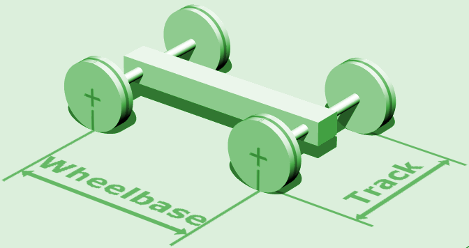

|
LemLib
0.4.3
An easy to use and feature-rich PROS template
|
You have made it to the second tutorial! Now that you have LemLib installed, we can start using it. In this tutorial, we will be setting up the chassis.
The chassis has multiple components. LemLib will handle everything for you, but you need to tell it what components you have.
A vital component of any robot is the drivetrain. The drivetrain is what allows the robot to move around the field. LemLib needs to know what motors are in the drivetrain. Lets start by setting up the motors.
In PROS, setting up a motor is trivial. All you need to do is create a motor object, set its port, what cartridge its using, and if it is reversed or not. We need to do this for each motor on the drivetrain. Below is an example:
Now we need to group the left side and right side motors so we can pass it to LemLib. To do this, we can use the pros::MotorGroup class. Here is an example:
Now that we have the motors set up, we need to tell LemLib about the track width, wheel diameter, and wheel rpm of the drivetrain. Let's start with the track width. The track width is the distance between the left and right drivetrain wheels, as shown in the image below:

We also need to tell LemLib the diameter of the wheels. Wheels typically come in 3 sizes: 2.75", 3.25", and 4". After that, we need to tell LemLib the rpm of the wheels. If your drivetrain is not geared, then the rpm of the wheels is the same as the rpm of the motor cartridge. If it is geared, refer to <a href="https://docs.google.com/spreadsheets/d/1RSoLv3tnpiCgFyHb0QayxK-42r9MgVRD_4QQmeFM618/edit#gid=0" >this spreadsheet</a> to find the rpm of the wheels. Now that we have all the information we need, we can create a <tt>lemlib::Drivetrain_t</tt> struct to pass to LemLib. Below is an example: @icode{cpp} lemlib::Drivetrain_t drivetrain { &leftMotors, // left drivetrain motors &rightMotors, // right drivetrain motors 10, // track width 3.25, // wheel diameter 360, // wheel rpm }; @endicode @section autotoc_md7 Odometry A crucial component of a consistent autonomous is position tracking, commonly known as odometry. Odometry allows the robot to know where it is on the field. LemLib has built in odometry, and is compatible with most tracking wheel / inertial sensor combinations. To set up odometry, we need to tell LemLib what sensors we are using. Lets start with the tracking wheels. Tracking Wheels are unpowered wheels that are used to track the movement of the robot. Below is a photo of a typical tracking wheel: <img src="../assets/2_setting_up_the_chassis/tracking_wheel.png" height=400 style="display: block;margin-left: auto;margin-right: auto;"> A tracking wheel can rotate freely on a screw joint, and rubber bands pull it down so it makes consistent contact with the field tiles. Tracking wheels can be connected to either an Optical Shaft Encoder or a V5 Rotation Sensor. Both are supported by LemLib. The first step in setting up the tracking wheels is to create an object for the encoder. Below is an example of how to do this: @icode{cpp} pros::ADIEncoder enc('A', 'B', true); // ports A and B, reversed pros::Rotation rot(1, false); // port 1, not reversed @endicode Next, we have to create a <tt>lemlib::TrackingWheel</tt> object. This contains information about the tracking wheel, such as the diameter and its offset from the tracking center. Below is an example of how to do this: @icode{cpp} // uses "enc" as the encoder. 2.75" wheel diameter, 4.3" offset from tracking center lemlib::TrackingWheel left_tracking_wheel(&enc, 2.75, 4.3); @endicode Hold on, how far away from the tracking center is the tracking wheel? Turns out, its not the straight distance to the center of the robot, but only one component of it. Below is a diagram which shows the relationship between the tracking center and the tracking wheel: <img src="../assets/2_setting_up_the_chassis/tracking_wheel_distance.png" height=800 style="display: block;margin-left: auto;margin-right: auto;"> Remember, vertical tracking wheels should have a negative offset if on the left of the tracking center, and horizontal tracking wheels should have a negative offset if in front of the tracking center. Now, we can put all the tracking wheels together into a struct with <tt>lemlib::OdomSensors_t</tt>. This struct will be passed to the LemLib chassis. Below is an example of how to do this: @icode{cpp} // left tracking wheel encoder pros::ADIEncoder left_enc('A', 'B', true); // ports A and B, reversed // right tracking wheel encoder pros::Rotation right_rot(1, false); // port 1, not reversed // back tracking wheel encoder pros::ADIEncoder back_enc('C', 'D', false); // ports C and D, not reversed // left tracking wheel lemlib::TrackingWheel left_tracking_wheel(&left_enc, 2.75, -4.6); // 2.75" wheel diameter, -4.6" offset from tracking center // right tracking wheel lemlib::TrackingWheel right_tracking_wheel(&right_rot, 2.75, 1.7); // 2.75" wheel diameter, 1.7" offset from tracking center lemlib::TrackingWheel back_tracking_wheel(&back_enc, 2.75, 4.5); // 2.75" wheel diameter, 4.5" offset from tracking center // inertial sensor pros::Imu inertial_sensor(2); // port 2 // odometry struct lemlib::OdomSensors_t sensors { &left_tracking_wheel, // vertical tracking wheel 1 &right_tracking_wheel, // vertical tracking wheel 2 &back_tracking_wheel, // horizontal tracking wheel 1 nullptr, // we don't have a second tracking wheel, so we set it to nullptr &inertial_sensor // inertial sensor }; @endicode You don't need all these sensors though. Even if you don't have any, you can still use LemLib. If you don't have a sensor, just set it to <tt>nullptr</tt>. Just remember that the more sensors you use, the more accurate the odometry will be. @section autotoc_md8 PIDs Lemlib uses 2 PIDs to control the motion of the robot (except for pure pursuit). Every chassis will have different constants however, so you will need to tune them. More about that in the next tutorial. For now, just copy and paste the following code into your <tt>main.cpp</tt> file: @icode{cpp} // forward/backward PID lemlib::ChassisController_t lateralController { 10, // kP 30, // kD 1, // smallErrorRange 100, // smallErrorTimeout 3, // largeErrorRange 500, // largeErrorTimeout 5 // slew rate }; // turning PID lemlib::ChassisController_t angularController { 2, // kP 10, // kD 1, // smallErrorRange 100, // smallErrorTimeout 3, // largeErrorRange 500, // largeErrorTimeout 5 // slew rate }; @endicode @section autotoc_md9 Putting it all together Below is everything we have done so far, all passed to the <tt>lemlib::Chassis</tt> constructor: @icode{cpp} // drivetrain motors pros::Motor left_front_motor(1, false); // port 1, not reversed pros::Motor left_back_motor(2, false); // port 2, not reversed pros::Motor right_front_motor(3, true); // port 3, reversed pros::Motor right_back_motor(4, true); // port 4, reversed // drivetrain motor groups pros::MotorGroup left_side_motors({left_front_motor, left_back_motor}); pros::MotorGroup right_side_motors({right_front_motor, right_back_motor}); lemlib::Drivetrain_t drivetrain { &leftMotors, // left drivetrain motors &rightMotors, // right drivetrain motors 10, // track width 3.25, // wheel diameter 360, // wheel rpm }; // left tracking wheel encoder pros::ADIEncoder left_enc('A', 'B', true); // ports A and B, reversed // right tracking wheel encoder pros::Rotation right_rot(1, false); // port 1, not reversed // back tracking wheel encoder pros::ADIEncoder back_enc('C', 'D', false); // ports C and D, not reversed // left tracking wheel lemlib::TrackingWheel left_tracking_wheel(&left_enc, 2.75, -4.6); // 2.75" wheel diameter, -4.6" offset from tracking center // right tracking wheel lemlib::TrackingWheel right_tracking_wheel(&right_rot, 2.75, 1.7); // 2.75" wheel diameter, 1.7" offset from tracking center lemlib::TrackingWheel back_tracking_wheel(&back_enc, 2.75, 4.5); // 2.75" wheel diameter, 4.5" offset from tracking center // inertial sensor pros::Imu inertial_sensor(2); // port 2 // odometry struct lemlib::OdomSensors_t sensors { &left_tracking_wheel, // vertical tracking wheel 1 &right_tracking_wheel, // vertical tracking wheel 2 &back_tracking_wheel, // horizontal tracking wheel 1 nullptr, // we don't have a second tracking wheel, so we set it to nullptr &inertial_sensor // inertial sensor }; // forward/backward PID lemlib::ChassisController_t lateralController { 10, // kP 30, // kD 1, // smallErrorRange 100, // smallErrorTimeout 3, // largeErrorRange 500, // largeErrorTimeout 5 // slew rate }; // turning PID lemlib::ChassisController_t angularController { 2, // kP 10, // kD 1, // smallErrorRange 100, // smallErrorTimeout 3, // largeErrorRange 500, // largeErrorTimeout 5 // slew rate }; // create the chassis lemlib::Chassis chassis(drivetrain, lateralController, angularController, sensors); @endicode Thats it! You have now set up the chassis. In the next tutorial, we will learn how to use the chassis to move the robot and how to tune the PIDs. @ref C:/Users/quade/Documents/Code/LemLib/master/docs/tutorials/1_getting_started.md "Previous Tutorial" <br> @ref C:/Users/quade/Documents/Code/LemLib/master/docs/tutorials/3_tuning_and_moving.md "Next Tutorial"